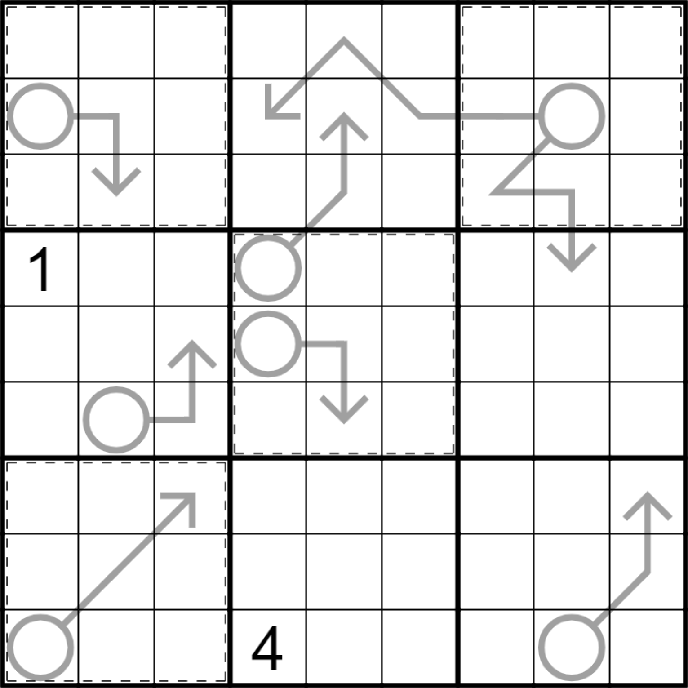
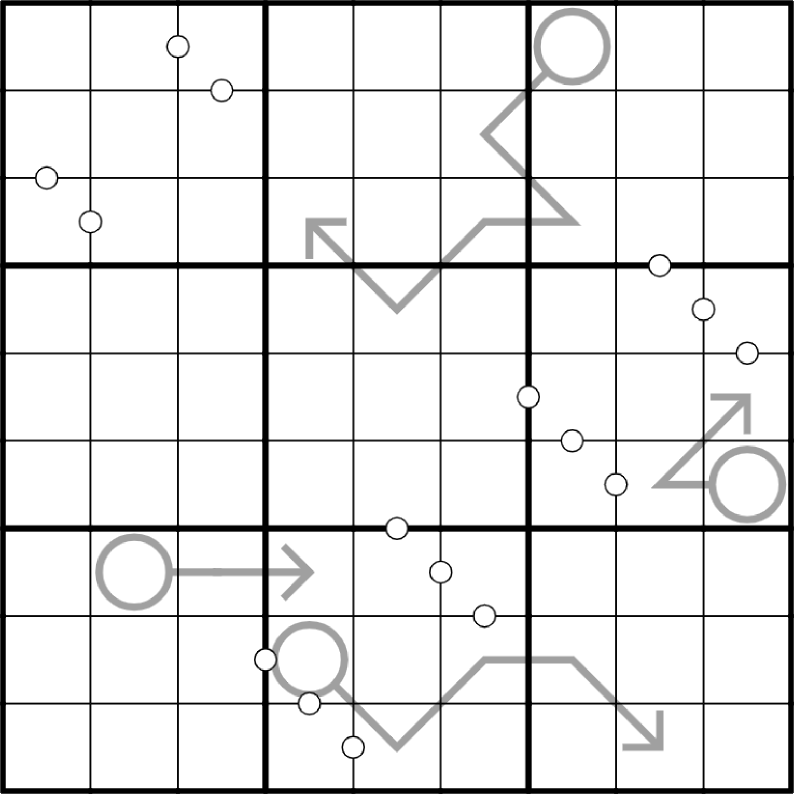
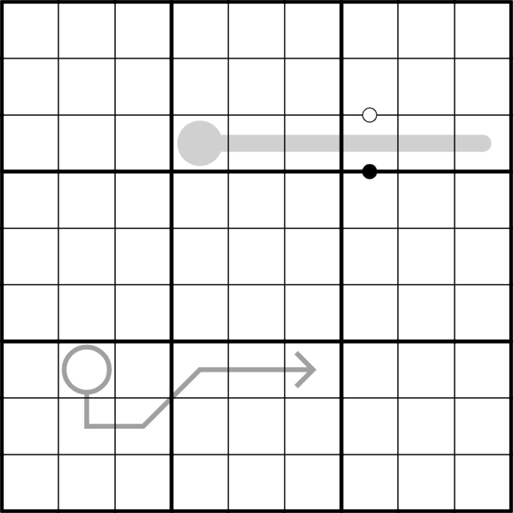
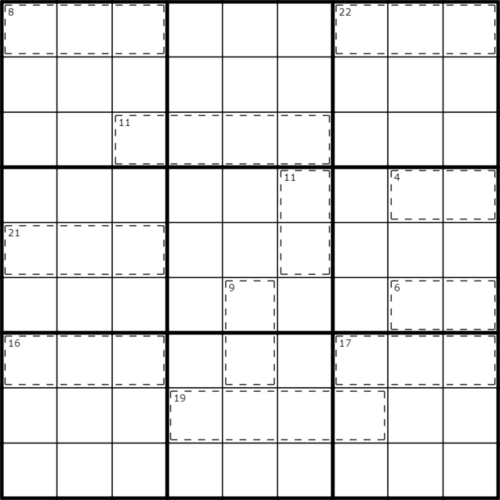

Sudoku
As a hobby, I like to set variant sudoku puzzles (sudokus with extra rules). Here are some examples. If you click on the link, you should load a playable version of the puzzle.
- Oils and Water

Normal sudoku rules apply (every row, column and 3 x 3 box must contain the digits 1 to 9). Digits along an arrow sum to the digit in the attached circle. Within boxes 1, 3 , 5 and 7 (outlined with dashed lines) digits in orthogonally adjacent cells must not sum to a multiple of 3. So, if row 2 column 3 contains 2, then none of row 1 column 3, row 2 column 2 or row 3 column 3 may contain 1, 4 or 7 (but no such constraint applies to row 2 column 4).
- Naseby

Normal sudoku rules apply (every row, column and 3 x 3 box must contain the digits 1 to 9). Digits along an arrow sum to the digit in the attached circle. Orthogonally adjacent cells sum to a mutiple of 3 if and only if they are separated by a white dot.
- Three Colours Suffice

Normal sudoku rules apply.
Along the thermometer, digits must increase from the bulb end.
Digits along the arrow must sum to the digit in the attached circle.
Digits separated by a white dot must be consecutive.
Digits separated by a black dot must be in a 1:2 ratio.
Digits in every consecutive triple of cells, horizontal and vertical, must sum to a multiple of 3.
- Hogwarts Killer

Normal Sudoku rules apply. Within a cage, digits sum to the clue in the corner. Every box is either mod 3 magic or mod 3 muggle. In a mod 3 magic box, every row, column and diagonal sums to the same total modulo 3. In a mod 3 muggle box, no pair of orthogonally connected cells may contain digits summing to a multiple of 3.
Hint: before you start, you'll find it useful to prove the following "theorem": In any completed sudoku box, at least one row, column or diagonal sums to a multiple of 3.
[ University of Leeds ]
[ Mathematics ]